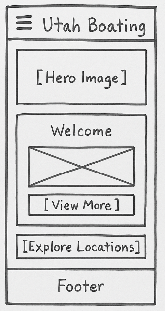
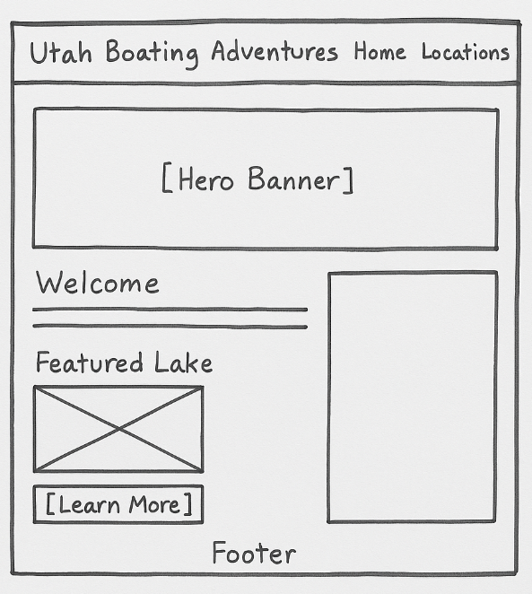

Site Name
Utah Boating Adventures - This name was chosen to reflect the spirit of recreational boating across Utah’s scenic lakes and reservoirs. It emphasizes both location and activity, ideal for visitors seeking adventure on the water.
Site Purpose
This website provides a hub of boating information for Utah, featuring lake guides, watercraft regulations, safety tips, and seasonal access information. Visitors can find everything from beginner tips to recommendations on boating locations and gear.
Scenarios
- What lakes in Utah are best for kayaking or paddleboarding?
- Where can I find amenities like restrooms, boat ramps, and campgrounds at Utah lakes?
Color Schema
- Deep Blue (#0077b6) – Used for headers and primary buttons.
- Light Blue (#90e0ef) – Backgrounds and accent areas.
- Navy (#023e8a) – Footer and navigation bar background.
- White (#ffffff) – Main content background and text contrast.
- Sand Beige (#fefae0) – Highlight boxes or informational sections.
Typography
- Headings: 'Big Shoulders', sans-serif
- Body Text: Arial, sans-serif
Wireframe
Mobile View:
Desktop View:
